── Attaching core tidyverse packages ──────────────────────── tidyverse 2.0.0 ──
✔ dplyr 1.1.4 ✔ readr 2.1.4
✔ forcats 1.0.0 ✔ stringr 1.5.1
✔ ggplot2 3.4.3 ✔ tibble 3.2.1
✔ lubridate 1.9.2 ✔ tidyr 1.3.0
✔ purrr 1.0.2
── Conflicts ────────────────────────────────────────── tidyverse_conflicts() ──
✖ dplyr::filter() masks stats::filter()
✖ dplyr::lag() masks stats::lag()
ℹ Use the conflicted package (<http://conflicted.r-lib.org/>) to force all conflicts to become errorsGLM basics II
This time
What is regression and why is it useful?
Nuts and bolts
Equation
Ordinary least squares
Interpretation
Regression
Regression is a general data analytic system, meaning lots of things fall under the umbrella of regression. This system can handle a variety of forms of relations, although all forms have to be specified in a linear way. Usefully, we can incorporate IVs of all nature – continuous, categorical, nominal, ordinal….
The output of regression includes both effect sizes and, if using frequentist or Bayesian software, statistical significance. We can also incorporate multiple influences (IVs) and account for their intercorrelations.
Regression
Scientific use: explaining the influence of one or more variables on some outcome.
- Does this intervention affect reaction time? Does self-esteem predict relationship quality?
Prediction use: We can develop models based on what’s happened in the past to predict what will happen in the figure.
- Insurance premiums? Graduate school… success?
Adjustment: Statistically control for known effects
- If everyone had the same level of SES, would abuse still be associated with criminal behavior?
Regression equation
What is a regression equation?
Functional relationship
Ideally like a physical law \((E = MC^2)\)
In practice, it’s never as robust as that
How do we uncover the relationship?
How does Y vary with X?
The regression of Y (DV) on X (IV) corresponds to the line that gives the mean value of Y corresponding to each possible value of X
“Our best guess” regardless of whether our model includes categories or continuous predictor variables
We will evaluate our guesses based on how far away we are from the mean. But how do we come up with those guesses in the first place?
Regression Equation
\[\Large Y = b_{0} + b_{1}X +e\]
\[\Large \hat{Y} = b_{0} + b_{1}X\]
\(\hat{Y}\) signifies the predicted score – no error
The difference between the predicted and observed score is the residual ( \(e_i\) )
OLS
- How do we find the regression estimates?
- Ordinary Least Squares (OLS) estimation
- Minimizes deviations
\[ min\sum(Y_{i}-\hat{Y})^{2} \]
- Other estimation procedures possible (and necessary in some cases)
Code
set.seed(123)
x.1 <- rnorm(10, 0, 1)
e.1 <- rnorm(10, 0, 2)
y.1 <- .5 + .55 * x.1 + e.1
d.1 <- data.frame(x.1,y.1)
m.1 <- lm(y.1 ~ x.1, data = d.1)
d1.f<- augment(m.1)Code
ggplot(d1.f , aes(x=x.1, y=y.1)) +
geom_point(size = 2) +
geom_smooth(method = lm, se = FALSE) +
theme_bw(base_size = 20)`geom_smooth()` using formula = 'y ~ x'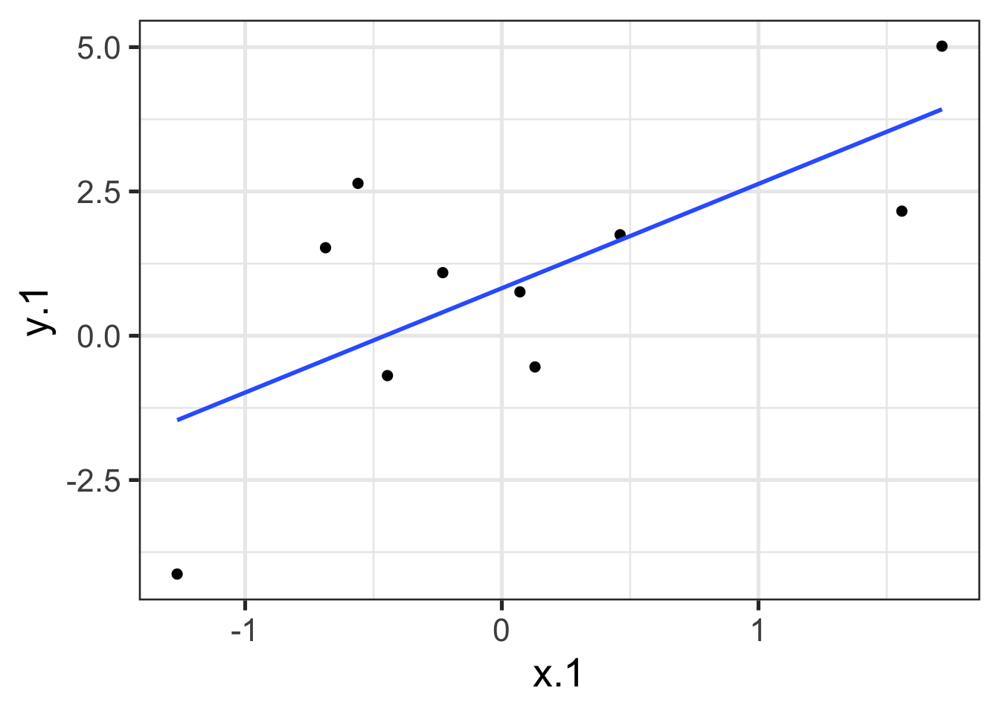
Code
ggplot(d1.f , aes(x=x.1, y=y.1)) +
geom_point(size = 2) +
geom_point(aes(y = .fitted), shape = 1, size = 2) +
theme_bw(base_size = 20)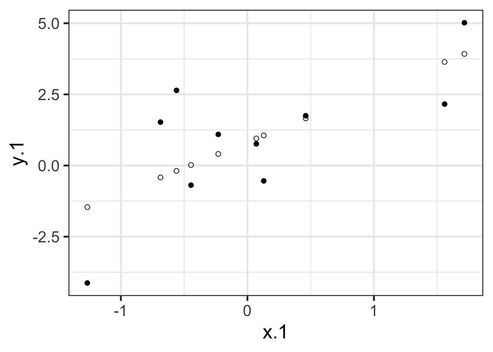
Code
ggplot(d1.f , aes(x=x.1, y=y.1)) +
geom_point(size = 2) +
geom_point(aes(y = .fitted), shape = 1, size = 2) +
geom_segment(aes( xend = x.1, yend = .fitted))+
theme_bw(base_size = 20)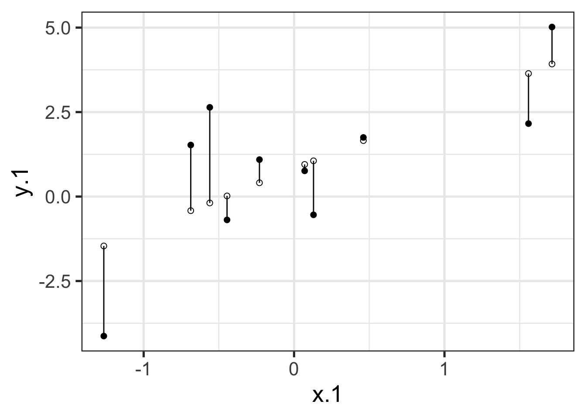
Code
ggplot(d1.f , aes(x=x.1, y=y.1)) +
geom_point(size = 2) +
geom_smooth(method = lm, se = FALSE) +
geom_point(aes(y = .fitted), shape = 1, size = 2) +
geom_segment(aes( xend = x.1, yend = .fitted))+
theme_bw(base_size = 20)`geom_smooth()` using formula = 'y ~ x'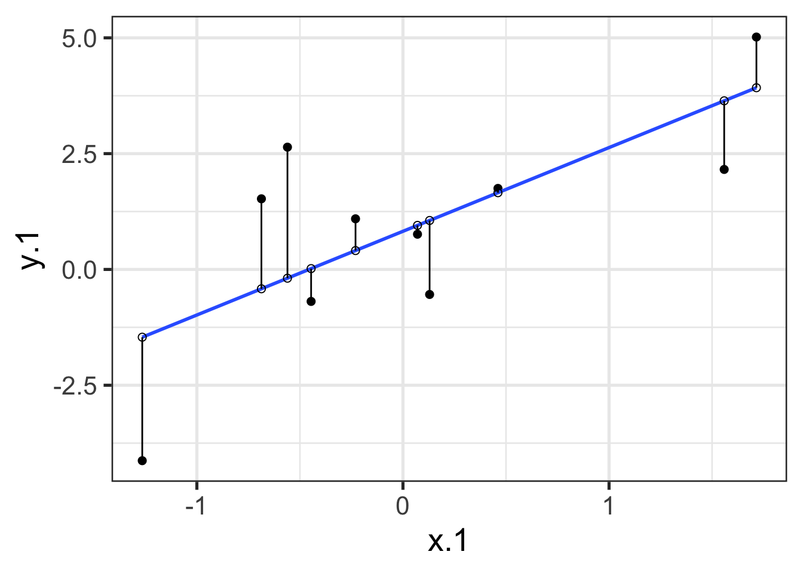
compare with bad fit
Code
new.i = 1.1
new.slope = -0.7
d1.f$new.fitted = 1.1 -0.7*d1.f$x.1
ggplot(d1.f , aes(x=x.1, y=y.1)) +
geom_point(size = 2) +
geom_abline(intercept = new.i, slope = new.slope, color = "blue", linewidth = 1) +
geom_point(aes(y = new.fitted), shape = 1, size = 2) +
geom_segment(aes( xend = x.1, yend = new.fitted))+
theme_bw(base_size = 20)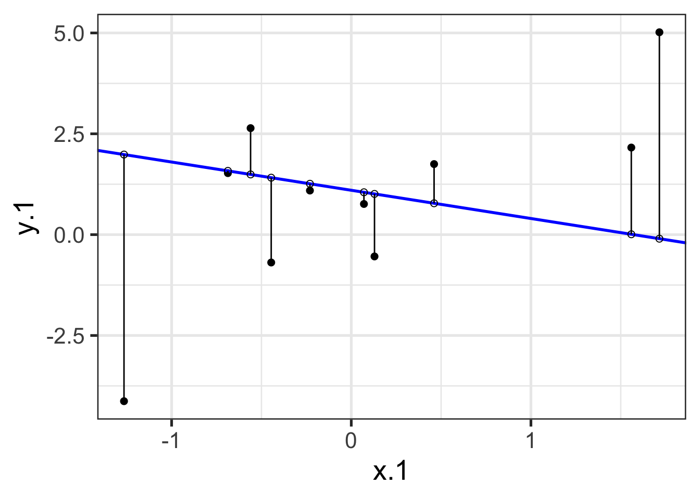
What is error?
\[\Large Y = b_{0} + b_{1}X +e\]
\[\Large \hat{Y} = b_{0} + b_{1}X\]
\[\Large Y_i = \hat{Y_i} + e_i\]
\[\Large e_i = Y_i - \hat{Y_i}\]
OLS
The line that yields the smallest sum of squared deviations
\[\Large \Sigma(Y_i - \hat{Y_i})^2\] \[\Large = \Sigma(Y_i - (b_0+b_{1}X_i))^2\] \[\Large = \Sigma(e_i)^2\]
In order to find the OLS solution, you could try many different coefficients \((b_0 \text{ and } b_{1})\) until you find the one with the smallest sum squared deviation. Luckily, there are simple calculations that will yield the OLS solution every time.
Regression coefficient, \(b_{1}\)
\[\large b_{1} = \frac{cov_{XY}}{s_{x}^{2}} = r_{xy} \frac{s_{y}}{s_{x}}\]
\[\large r_{xy} = \frac{s_{xy}}{s_xs_y}\]
- The regression coefficient (slope) equals the estimated change in Y for a 1-unit change in X
Standardized regression
- Regression using z-scores for Y and X
- Correlation equals standardized regression coefficient
\[\large b_{1} = r_{xy} \frac{s_{y}}{s_{x}}\]
\[ \large r_{xy} = b_1\frac{s_x}{s_y} \]
If the variance of both X and Y is equal to 1 (as in z-scores):
\[\large \beta_{1} = b_{1}^* = r_{xy}\]
Standardized regression equation
\[\large Y = b_{1}^*X+e\]
\[\large b_{1}^* = b_{1}\frac{s_x}{s_y}\]
When \(X = 0, Y = 0\). A one-standard deviation increase in X is associated with a \(b_{1}^*\) standard deviation increase in Y. Our regression coefficient is equivalent to the correlation coefficient when we have only one predictor in our model.
Estimating the intercept, \(b_0\)
- Re-write equation to include the means of Y and X ( \(\bar{X}\) & \(\bar{Y}\) )
- Intercept serves to adjust for differences in means between X and Y
\[\Large \hat{Y} = \bar{Y} + r_{xy} \frac{s_{y}}{s_{x}}(X-\bar{X})\] - If standardized, intercept drops out. Otherwise, intercept is where regression line crosses the y-axis at X = 0
- Notice that when \(X = \bar{X}\) the regression line goes through \(\bar{Y}\). This is true for all regressions such that the regression line must pass through \(\bar{X}\) and \(\bar{Y}\)
Example
Code
library(psych)
Attaching package: 'psych'The following objects are masked from 'package:ggplot2':
%+%, alphaCode
galton.data <- psychTools::galton
head(galton.data) parent child
1 70.5 61.7
2 68.5 61.7
3 65.5 61.7
4 64.5 61.7
5 64.0 61.7
6 67.5 62.2Code
describe(galton.data, fast = T) vars n mean sd min max range se
parent 1 928 68.31 1.79 64.0 73.0 9 0.06
child 2 928 68.09 2.52 61.7 73.7 12 0.08Code
cor(galton.data) parent child
parent 1.0000000 0.4587624
child 0.4587624 1.0000000If we regress child height onto parents’:
r = cor(galton.data)[2,1]
m_parent = mean(galton.data$parent)
m_child = mean(galton.data$child)
s_parent = sd(galton.data$parent)
s_child = sd(galton.data$child)
(b1 = r*(s_child/s_parent))[1] 0.6462906(b0 = m_child - b1*m_parent)[1] 23.94153How will this change if we regress parent height onto child height?
(b1 = r*(s_child/s_parent))[1] 0.6462906(b0 = m_child - b1*m_parent)[1] 23.94153(b1 = r*(s_parent/s_child))[1] 0.3256475(b0 = m_parent - b1*m_child)[1] 46.13535In R
Code
fit.1 <- lm(child ~ parent, data = galton.data)
summary(fit.1)
Call:
lm(formula = child ~ parent, data = galton.data)
Residuals:
Min 1Q Median 3Q Max
-7.8050 -1.3661 0.0487 1.6339 5.9264
Coefficients:
Estimate Std. Error t value Pr(>|t|)
(Intercept) 23.94153 2.81088 8.517 <2e-16 ***
parent 0.64629 0.04114 15.711 <2e-16 ***
---
Signif. codes: 0 '***' 0.001 '**' 0.01 '*' 0.05 '.' 0.1 ' ' 1
Residual standard error: 2.239 on 926 degrees of freedom
Multiple R-squared: 0.2105, Adjusted R-squared: 0.2096
F-statistic: 246.8 on 1 and 926 DF, p-value: < 2.2e-16Reversed
Code
summary(lm(parent ~ child, data = galton.data))
Call:
lm(formula = parent ~ child, data = galton.data)
Residuals:
Min 1Q Median 3Q Max
-4.6702 -1.1702 -0.1471 1.1324 4.2722
Coefficients:
Estimate Std. Error t value Pr(>|t|)
(Intercept) 46.13535 1.41225 32.67 <2e-16 ***
child 0.32565 0.02073 15.71 <2e-16 ***
---
Signif. codes: 0 '***' 0.001 '**' 0.01 '*' 0.05 '.' 0.1 ' ' 1
Residual standard error: 1.589 on 926 degrees of freedom
Multiple R-squared: 0.2105, Adjusted R-squared: 0.2096
F-statistic: 246.8 on 1 and 926 DF, p-value: < 2.2e-16Code
ggplot(galton.data, aes(x=parent, y=child)) +
geom_point() +
geom_smooth(method=lm, # Add linear regression line
se=FALSE) +
theme_bw(base_size = 20)`geom_smooth()` using formula = 'y ~ x'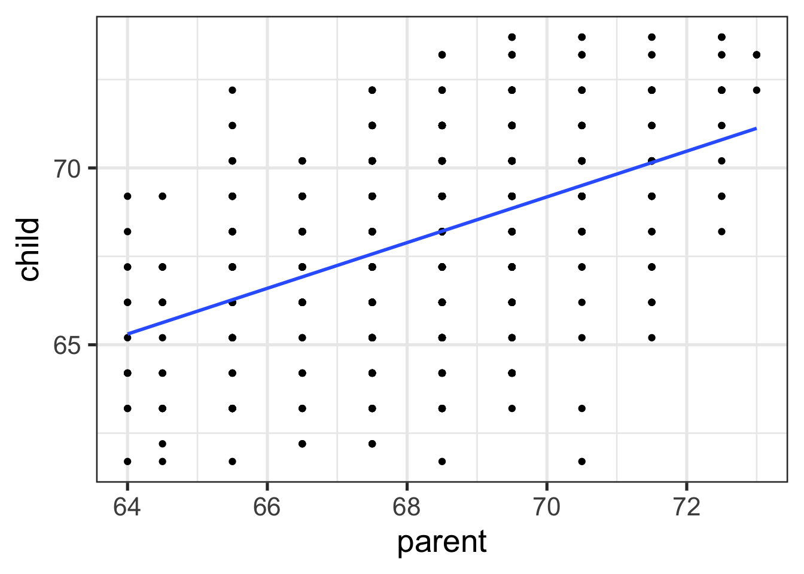
Data, predicted, and residuals
Code
library(broom)
model_info = augment(fit.1)
head(model_info)# A tibble: 6 × 8
child parent .fitted .resid .hat .sigma .cooksd .std.resid
<dbl> <dbl> <dbl> <dbl> <dbl> <dbl> <dbl> <dbl>
1 61.7 70.5 69.5 -7.81 0.00270 2.22 0.0165 -3.49
2 61.7 68.5 68.2 -6.51 0.00109 2.23 0.00462 -2.91
3 61.7 65.5 66.3 -4.57 0.00374 2.23 0.00787 -2.05
4 61.7 64.5 65.6 -3.93 0.00597 2.24 0.00931 -1.76
5 61.7 64 65.3 -3.60 0.00735 2.24 0.00966 -1.62
6 62.2 67.5 67.6 -5.37 0.00130 2.23 0.00374 -2.40describe(model_info) vars n mean sd median trimmed mad min max range skew
child 1 928 68.09 2.52 68.20 68.12 2.97 61.70 73.70 12.00 -0.09
parent 2 928 68.31 1.79 68.50 68.32 1.48 64.00 73.00 9.00 -0.04
.fitted 3 928 68.09 1.16 68.21 68.10 0.96 65.30 71.12 5.82 -0.04
.resid 4 928 0.00 2.24 0.05 0.06 2.26 -7.81 5.93 13.73 -0.24
.hat 5 928 0.00 0.00 0.00 0.00 0.00 0.00 0.01 0.01 1.99
.sigma 6 928 2.24 0.00 2.24 2.24 0.00 2.22 2.24 0.01 -2.39
.cooksd 7 928 0.00 0.00 0.00 0.00 0.00 0.00 0.02 0.02 3.44
.std.resid 8 928 0.00 1.00 0.02 0.03 1.01 -3.49 2.65 6.14 -0.24
kurtosis se
child -0.35 0.08
parent 0.05 0.06
.fitted 0.05 0.04
.resid -0.23 0.07
.hat 3.47 0.00
.sigma 8.62 0.00
.cooksd 17.34 0.00
.std.resid -0.23 0.03- The average of the residuals is 0, just like average deviation from the mean is 0.
Residuals
Dispersion of residuals can be thought of as what is left over in Y that is not explained by our model. As residuals get smaller on average, so will the SD of the residuals.
Sigma ( \(\sigma\) ) is the SD of residuals. It can be thought of as how much left over in Y that we cannot explain by our model.
Code
model_info %>% ggplot(aes(x = parent, y = .fitted)) +
geom_point() + geom_smooth(se = F, method = "lm") + ggtitle(expression(paste("X is related to ", hat(Y))))+
scale_x_continuous("X") + scale_y_continuous(expression(hat(Y))) + theme_bw(base_size = 30)`geom_smooth()` using formula = 'y ~ x'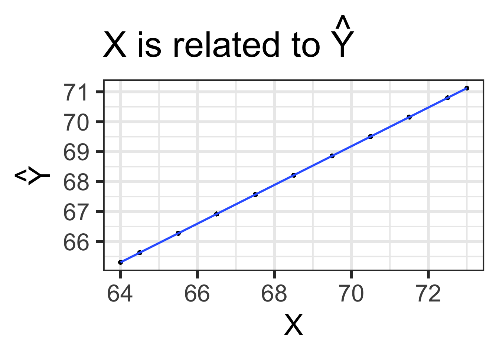
Code
model_info %>% ggplot(aes(x = parent, y = .resid)) +
geom_point() + geom_smooth(se = F, method = "lm") + ggtitle("X is always unrelated to e")+
scale_x_continuous("X") + scale_y_continuous("e") + theme_bw(base_size = 30)`geom_smooth()` using formula = 'y ~ x'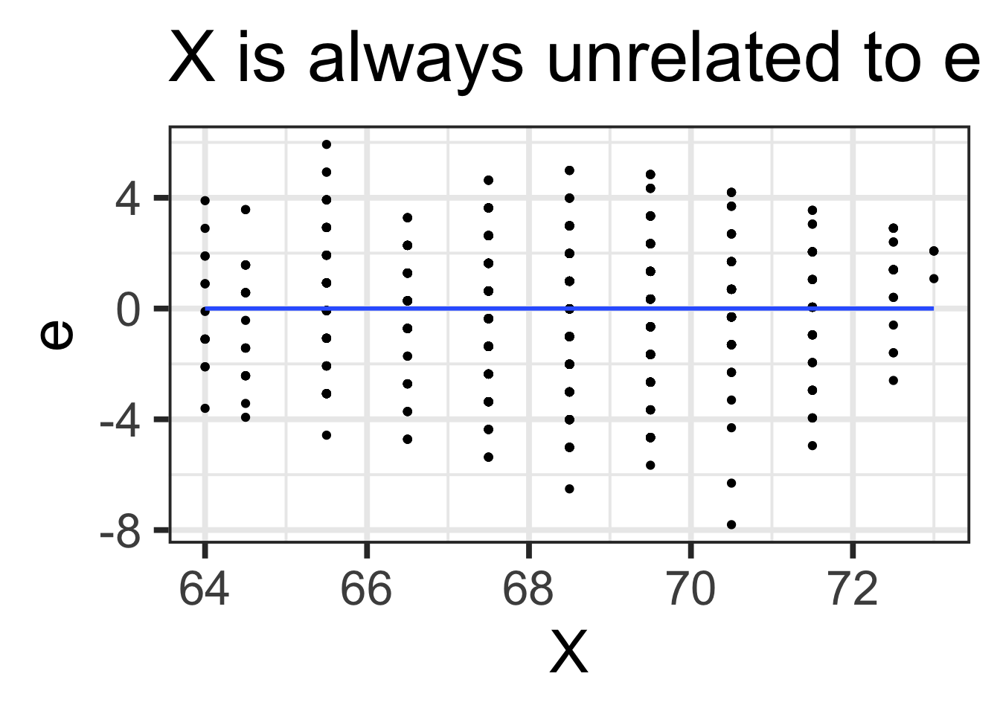
Code
model_info %>% ggplot(aes(x = child, y = .fitted)) +
geom_point() + geom_smooth(se = F, method = "lm") + ggtitle(expression(paste("Y can be related to ", hat(Y))))+
scale_x_continuous("Y") + scale_y_continuous(expression(hat(Y))) + theme_bw(base_size = 30)`geom_smooth()` using formula = 'y ~ x'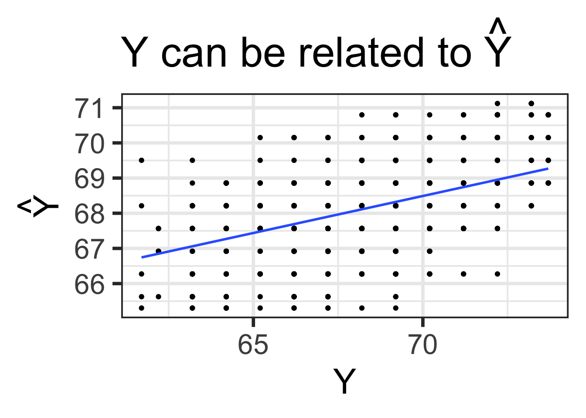
Code
model_info %>% ggplot(aes(x = child, y = .resid)) +
geom_point() + geom_smooth(se = F, method = "lm") + ggtitle("Y is sometimes related to e")+
scale_x_continuous("Y") + scale_y_continuous("e") + theme_bw(base_size = 25)`geom_smooth()` using formula = 'y ~ x'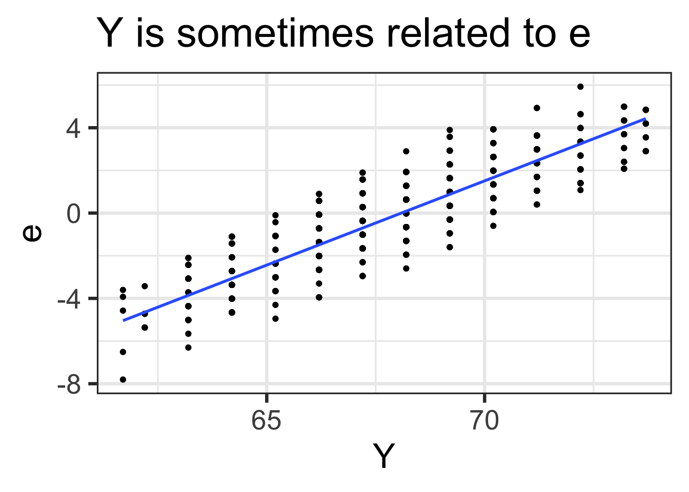
Code
model_info %>% ggplot(aes(x = .fitted, y = .resid)) +
geom_point() + geom_smooth(se = F, method = "lm") + ggtitle(expression(paste(hat(Y), " is always unrelated to e")))+
scale_y_continuous("e") + scale_x_continuous(expression(hat(Y))) + theme_bw(base_size = 30)`geom_smooth()` using formula = 'y ~ x'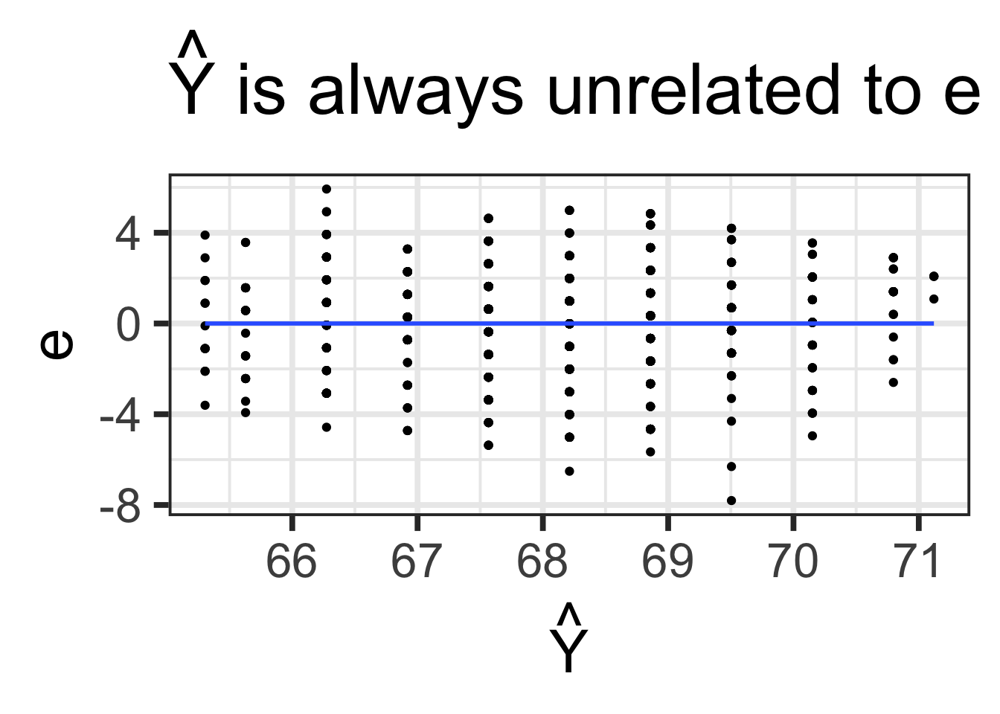
Code
model_info %>% rename(y = child, x = parent) %>% select(x,y,.fitted,.resid) %>% gather("key", "value") %>%
ggplot(aes(value, fill = key)) + geom_histogram(bins = 25) + guides(fill = F)+
facet_wrap(~key, scales = "free") + theme_bw(base_size = 20)Warning: The `<scale>` argument of `guides()` cannot be `FALSE`. Use "none" instead as
of ggplot2 3.3.4.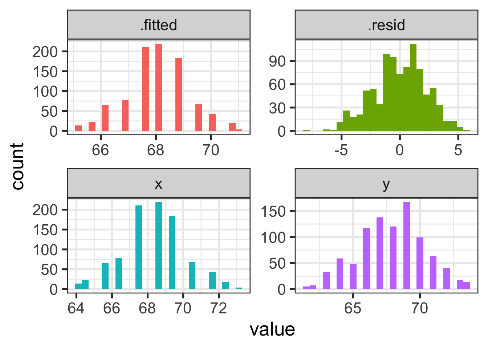
Residuals Summary
- Residuals are not correlated with \(X\) and \(\hat{Y}\) because those two are perfectly correlated with one another (that is, \(r_{\text{fitted,x}} = 1\) )
- \(X\) and \(\hat{Y}\) represent the same information. We use our model ( \(X\) ) to make a prediction ( \(\hat{Y}\) ). These predictions are entirely based on the model.
- There is no correlation between residuals with \(X\) and \(\hat{Y}\) because they are created by subtracting them out of \(Y\). That is, ( \(\epsilon = Y - \hat{Y}\) )
- Sigma ( \(\sigma\) ; the SD of residuals) can be thought of as how much left over in \(Y\) after we take out all of the information our model provides.